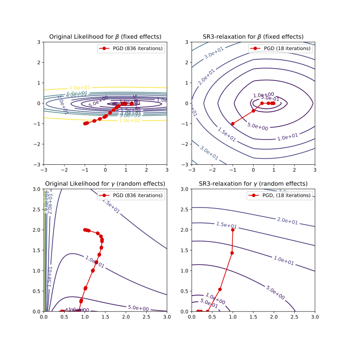

Models Overview
The library provides both basic and SR3-empowered implementations of modern regularized regression algorithms. Below we give an overview of available options and give advice on how to choose a model suitable for your goals.
Table of Models
Linear Models
Located in pysr3.linear submodule
Regularizer |
without SR3 |
with SR3 |
|---|---|---|
No regularization |
|
|
LASSO |
|
|
CAD |
|
|
SCAD |
|
|
The classes LinearModel is a base class that implements core
functionality.
Linear Mixed-Effects Models
Regularizer |
without SR3 |
with SR3 |
|---|---|---|
No regularization |
|
|
L0 |
|
|
LASSO |
|
|
CAD |
|
|
SCAD |
|
|
The class LMEModel is a base class that implements core
functionality.
Regularizers
The library currently implements five popular regularizers: L0, LASSO, A-LASSO, CAD, and SCAD. Below we plot the values and the proximal mappings for three of them:
from pysr3.regularizers import L1Regularizer, CADRegularizer, SCADRegularizer
import numpy as np
from matplotlib import pyplot as plt
x = np.linspace(-4, 4)
fig, ax = plt.subplots(nrows=2, ncols=3)
for i, (name, regularizer) in enumerate({"L1": L1Regularizer(lam=1),
"CAD": CADRegularizer(lam=1, rho=1),
"SCAD": SCADRegularizer(lam=1, sigma=0.5, rho=3.7)}.items()):
ax[0, i].plot(x, [regularizer.value(xi) for xi in x])
ax[0, i].set_title(f"{name}: value")
ax[1, i].plot(x, [regularizer.prox(xi, alpha=1) for xi in x])
ax[1, i].set_title(f"{name}: prox mapping")
fig.tight_layout()
plt.show()
L1 (LASSO)
This is a well-known sparsity-promoting regularizer that penalizes the loss-funciton with a sum of absolute values of the model’s coefficients:
In pysr3, it’s implemented as pysr3.regularizers.L1Regularizer
class.
\(\lambda\) is a hyper-parameter that controls the strength of the regularization. Larger values of \(\lambda\) lead to sparser sets of coefficients. The optimal value is normally set via cross-validation grid-search that minimizes an information criterion of the choice (AIC, BIC, e.t.c.) on a validation part of the splits. See the example in Quickstart tutorial.
Adaptive LASSO (A-LASSO)
Adaptive LASSO uses \(\bar{x}\) – a solution for a non-regularized problem – as weights for LASSO penalty:
In pysr3, A-LASSO can be implemented by providing custom
regularization weights to LASSO model:
from pysr3.linear.problems import LinearProblem
from pysr3.linear.models import SimpleLinearModel, LinearL1Model
x, y = LinearProblem.generate(num_objects=100, num_features=200, true_x=[0, 1]*100).to_x_y()
non_regularized_coefficients = SimpleLinearModel().fit(x, y).coef_["x"]
regularization_weights = 1/(non_regularized_coefficients + 1e-3) # safeguard against zeros in the denominator
alasso_model = LinearL1Model(lam=1).fit(x, y, regularization_weights=regularization_weights)
CAD
Clipped Absolute Deviation (CAD) penalty is a clipped version of LASSO. When the values of the coefficients are less than a hyper-parameter \(\rho\) – it works like LASSO, but it does not penalize the coefficients that are bigger than that in their absolute value. It addresses an issue of LASSO penalizing big coefficients too much.
In pysr3, CAD regularizer is implemented as
pysr3.regularizers.CADRegularizer.
SCAD
Smooth Clipped Absolute Deviation (SCAD) penalty is a smoothed version of SCAD. Instead of imposing a hard threshold, it uses 2-knot smooth spline interpolation to connect the flat and the absolute value parts. The knots of the spline are located at points \(\rho\) and \(\sigma\rho\).
In pysr3, SCAD regularizer is implemented as
pysr3.regularizers.CADRegularizer.
Regular PGD vs SR3-PGD
Proximal Gradient Descent (PGD) is currently the core numerical solver
for pysr3. It has a very simple form of iteration that requires only
gradient information of the loss function and the proximal operator of
the regularizer:
\(x_{k+1} = \text{prox}_{\alpha R}(x_k - \alpha \nabla f(x_k))\)
The core methodological innovation of pysr3 is Sparse Relaxed
Regularized Regression (SR3) framework. It improves the conditioning of
the loss function, that leads to faster convergence and more accurate
feature selection.
The picture below illustrates how SR3 changes the landscape of the likelihood for a Linear Mixed-Effect Model. Notice that the same optimization method takes nearly two orders of magnitude less iterations to converge.

Every model in pysr3 has its SR3-empowered version. For all of them, the
parameter ell controls the degree of relaxation, with larger
parameter values giving tighter relaxations. ell can be left to its
default value or can be found via grid-search simultaneously with
\(\lambda\).